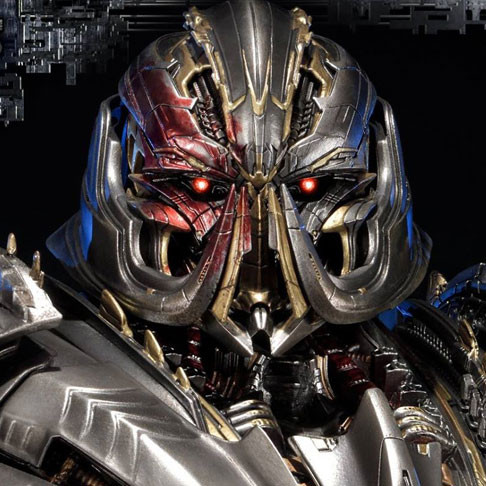
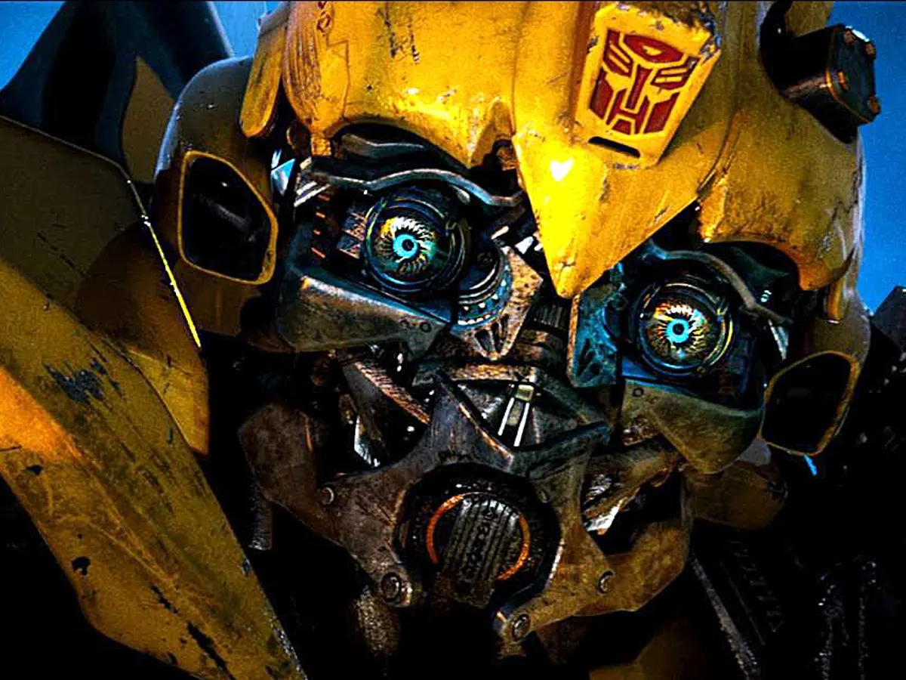
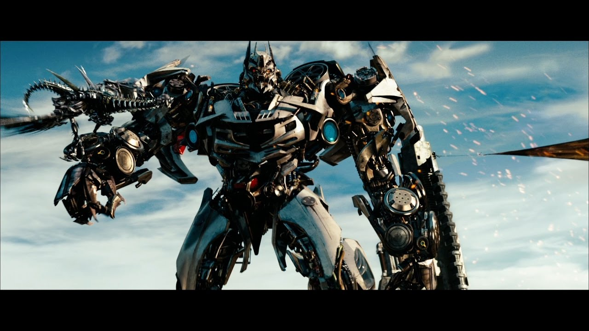
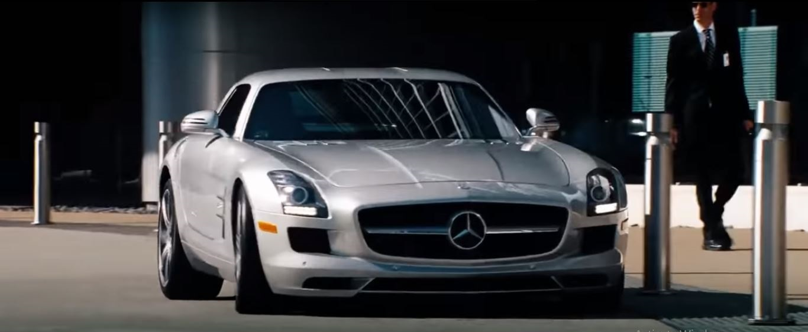

Megatron

Soundwave (hay còn gọi là Soundblaster ) là một trong những đội quân đáng tin cậy nhất của Megatron , và anh ta đã định vị mình một cách thoải mái và không thể thay thế trong cơ cấu chỉ huy cấp trên của Decepticon. Mặc dù là Nhân viên Truyền thông "duy nhất", Soundwave sát cánh cùng Megatron như một người bạn tâm giao, có thể so sánh ngang hàng với Starscream và Shockwave, nhưng không giống như họ, hoàn toàn trung thành với thủ lĩnh của mình. Mặc dù khắc kỷ và sở hữu ít tính cách hướng ngoại (bằng chứng là giọng nói đều đều kiểu máy tính của anh ấy), Soundwave không phải là không có động lực: anh ấy đã làm việc chăm chỉ để đạt được vị trí của mình và anh ấy bảo vệ vị trí của mình trong hệ thống phân cấp Decepticon một cách quyết liệt. Ngoài việc nghe thấy tất cả trong vai trò là Nhân viên Truyền thông và bậc thầy gián điệp Decepticon, anh ta thực sự có khả năng "đọc suy nghĩ" bằng cách quét và giải mã các xung điện mang "suy nghĩ" ở cả sinh vật hữu cơ và Cybertronians, và anh ta sẽ không ngần ngại sử dụng những gì anh ta học được như một lời tống tiền để giữ cho mình được Megatron đánh giá cao. Do đó, Soundwave không phổ biến trong số các Decepticon hạng-and-file, những người coi anh ta như một con rắn hai mặt

Hàng triệu năm trước, Soundwave là một trong những thành viên đầu tiên của Decepticons; sau khi gieo rắc sự bất bình trong quần chúng, anh ta, Megatron và Ravage bắt đầu cuộc chiến xé nát hành tinh ra khỏi quỹ đạo của nó. Sau khi tham gia thất bại trong nỗ lực chiếm đoạt Ark của Decepticon bốn triệu năm trước, anh ta rơi vào tình trạng bế tắc cùng với các thành viên còn lại sau khi con tàu bị rơi cho đến năm 1984, khi một vụ phun trào núi lửa , kích hoạt lại Autobots và Decepticons, gây ra cuộc chiến của họ trên Trái đất. Soundwave sẽ chứng tỏ là một trong những đội quân hữu ích nhất, mặc dù không phải là một trong những đội quân trung thành nhất, bí mật chạy các âm mưu tống tiền và vui vẻ quá giang xe ngựa của mình cho bất kỳ thủ lĩnh Decepticon nào hiện đang ở thế thượng phong, cho đến khi—trong nhiềucác mốc thời gian của mảnh vụn — chính anh ta trở thành thủ lĩnh của Decepticons.

Soundwave ra lệnh cho một đội quân băng cassette ngày càng phát triển để thực hiện các nhiệm vụ lớn và nhỏ. Được cất giữ trong ngăn rương đặc trưng của anh ấy và gọi ra theo ý thích của Soundwave chỉ bằng một nút nhấn, những mối đe dọa thu nhỏ này thường được sử dụng làm gián điệp cho mục tiêu cá nhân của Decepticon hoặc Soundwave, nhưng cũng hiệu quả như các chiến binh và hoàn toàn tận tụy cho chủ nhân của họ. Họ cũng không phải là đối tác nhỏ duy nhất của Soundwave: với tư cách là Bậc thầy hành động , anh ấy hợp tác với Wingthing .
AllSpark nhanh chóng được đưa đến Mission City gần đó , nơi Sam được hướng dẫn đưa nó lên đỉnh của tòa nhà cao nhất để sơ tán. Loạng choạng khi chạy, Sam ngã và đập AllSpark xuống đất, khiến nó giải phóng một làn sóng bức xạ năng lượng khiến một số máy móc gần đó hoạt động. Khi lên đến đỉnh của tòa nhà, Sam phải đối mặt với Megatron, nhưng từ chối chuyển khối lập phương cho anh ta, và bị hất đổ khỏi tòa nhà. Optimus Prime đã đến giải cứu anh ta, và trong trận chiến diễn ra sau đó giữa Prime và Megatron, thủ lĩnh Autobot đã bảo Sam hợp nhất AllSpark với tia lửa của anh ta.để tiêu diệt nó. Tuy nhiên, thay vào đó, Sam đã hợp nhất nó với tia lửa của Megatron, tiêu diệt cả thủ lĩnh Decepticon và AllSpark. Chỉ một mảnh duy nhất của khối lập phương dường như còn sót lại mà Prime đã lấy ra từ xác chết của Megatron.